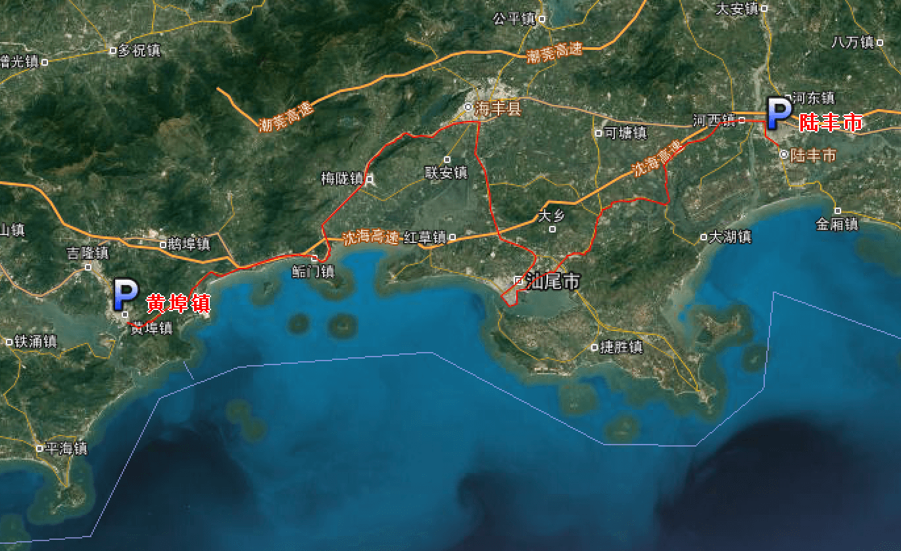
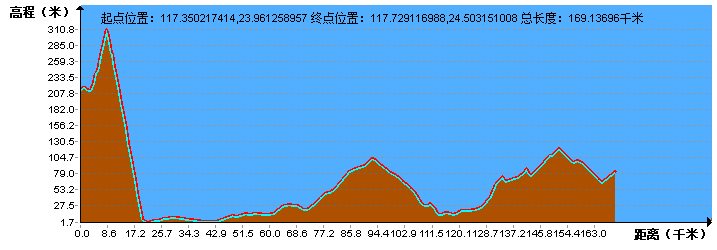
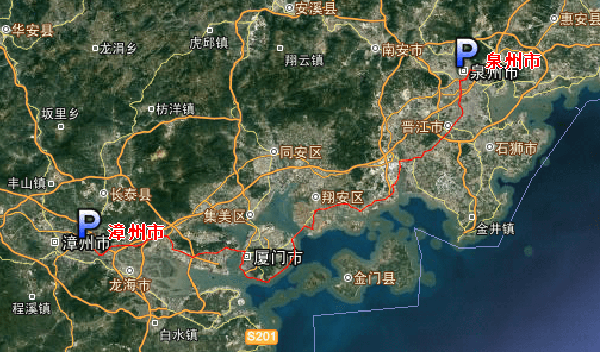
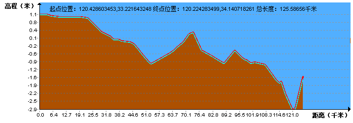
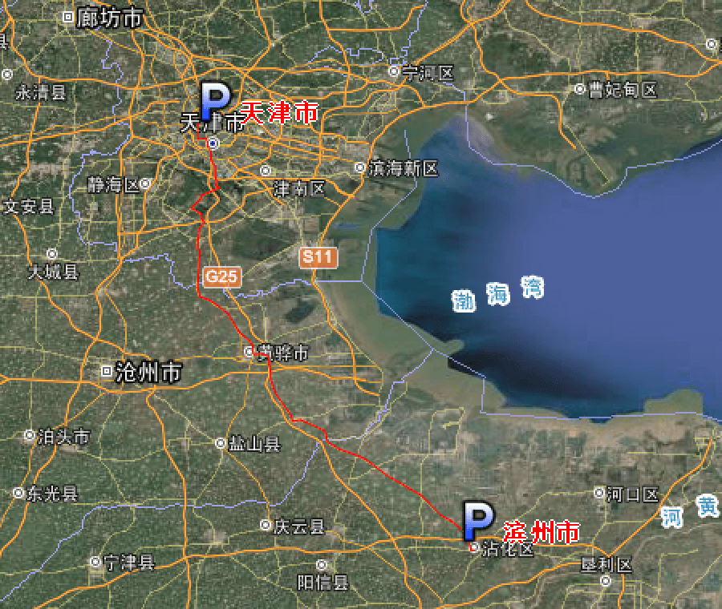
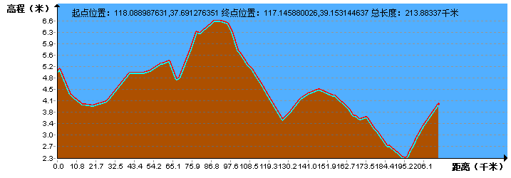
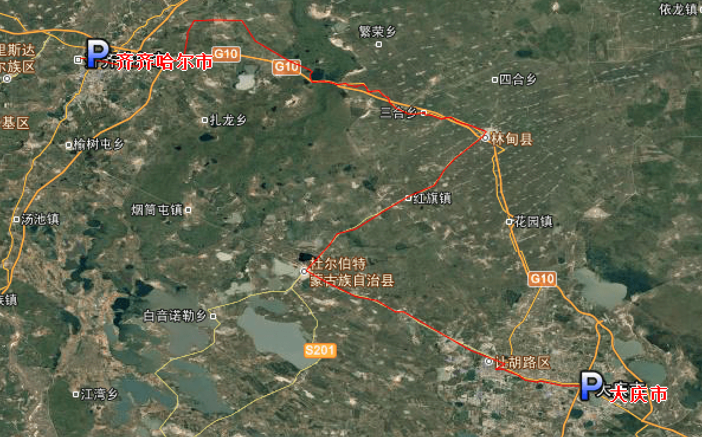

| | | | | |
| - | - | - | - | - |
|<b>别名</b>|南粤||<b>著名景点</b>|丹霞山、长隆欢乐世界、华侨城、白云山、雁南飞、观澜湖、罗浮山|
|<b>行政区类别</b>|省||<b>机 场</b>|广州白云机场、深圳宝安机场等|
|<b>所属地区</b>|中国华南||<b>火车站</b>|广州南站、广州站、广州东站、深圳北站等|
|<b>下辖地区</b>|21个地级市、20个县级市||<b>车牌代码</b>|粤+城市牌号|
|<b>电话区号</b>|020、066+、075+、076+||<b>GDP</b>|8.99万亿元（2017年）|
|<b>邮政区码</b>|51-52（广州：510000）||<b>人均GDP</b>|80490元|
|<b>地理位置</b>|中国南岭以南，南海之滨||<b>高等院校</b>|中大、华工、暨大、华师等|
|<b>面 积</b>|17.97万平方公里||<b>省 长</b>|马兴瑞|
|<b>人 口</b>|11169万人（2017年常住人口）||<b>省委书记</b>|李希|
|<b>方 言</b>|粤语、客家语、闽语等||<b>行政区划代码</b>|440000|
|<b>气候条件</b>|亚热带季风气候||-|-|
| <b>广东生活文化</b> | <b>广东特色文化</b> | <b>广东曲艺文化</b> | <b>广东建筑文化</b> | <b>广东宗教文化</b> |
| - | - | - | - | - |
| <a href="javascript:;" onclick="live(this);">习俗/民俗</a> | <a href="javascript:;" onclick="feature(this);">饮茶文化</a> | <a href="javascript:;" onclick="art(this);">曲艺文化</a> | - | - |
| <a href="javascript:;" onclick="live(this);">方言文化</a> | <a href="javascript:;" onclick="feature(this);">文化遗产</a> | - | - | - |
| <a href="javascript:;" onclick="live(this);">节日文化</a> | - | - | - | - |
| <a href="javascript:;" onclick="live(this);">嫁娶文化</a> | - | - |-|-|
| <a href="javascript:;" onclick="live(this);">饮食文化</a> | - | -|-|-|
| <a href="javascript:;" onclick="live(this);">广东禁忌</a> | - | -|-|-|
## <i class="fa fa-file-text-o"></i>&nbsp;目录（Table of Contents）
+ [I. 总路线图](#one)
+ [II. 景点](#two)
+ [III. 路线规划（所含地区：广东、福建、浙江、江苏、山东、河北、天津、北京、辽宁、吉林、黑龙江）](#three)
- [1、岑溪市 - 云浮市](#1)
- [2、云浮市 - 广州市](#2)
- [3、广州市 - 横沥镇](#3)
- [4、横沥镇 - 深圳市](#4)
- [5、深圳市 - 黄埠镇](#5)
- [6、黄埠镇 - 陆丰市](#6)
- [7、陆丰市 - 惠来县](#7)
- [8、惠来县 - 汕头市](#8)
- [9、汕头市 - 云霄县](#9)
- [10、云霄县 - 漳州市](#10)
- [11、漳州市 - 泉州市](#11)
- [12、泉州市 - 福清市](#12)
- [13、福清市 - 罗源县](#13)
- [14、罗源县 - 甘棠镇](#14)
- [15、甘棠镇 - 霞浦县](#15)
- [16、霞浦县 - 福鼎市](#16)
- [17、福鼎市 - 温州市](#17)
- [18、温州市 - 台州市](#18)
- [19、台州市 - 宁海县](#19)
- [20、宁海县 - 杭州市](#20)
- [21、杭州市 - 苏州市](#21)
- [22、苏州市 - 南通市](#22)
- [23、南通市 - 大丰市](#23)
- [24、大丰市 - 滨海港镇](#24)
- [25、滨海港镇 - 连云港市](#25)
- [26、连云港 - 青岛市](#26)
- [27、青岛市 - 乳山市](#27)
- [28、乳山市 - 威海市](#28)
- [29、威海市 - 蓬莱市](#29)
- [30、蓬莱市 - 央子镇](#30)
- [31、央子镇 - 滨州市](#31)
- [32、滨州市 - 天津市](#32)
- [33、天津市 - 北京市](#33)
- [34、北京市 - 唐山市](#34)
- [35、唐山市 - 秦皇岛市](#35)
- [36、秦皇岛市 - 葫芦岛市](#36)
- [37、葫芦岛市 - 盘锦市](#37)
- [38、盘锦市 - 沈阳市](#38)
- [39、沈阳市 - 四平市](#39)
- [40、四平市 - 长春市](#40)
- [41、长春市 - 扶余市](#41)
- [42、扶余市 - 哈尔滨市](#42)
- [43、哈尔滨市 - 大庆市](#43)
- [44、大庆市 - 齐齐哈尔市](#44)
<h2 id="one"><i class="fa fa-circle-o-notch fa-spin"></i>&nbsp;总路线图</h2>
<h2 id="two"><i class="fa fa-star-o"></i>&nbsp;景点</h2>
<img data-src="../imgs/region-line/scenic-spot/guangdong.gif" title="景点"/>
<h2 id="three"><i class="fa fa-spinner fa-pulse"></i>&nbsp;路线规划（所含地区：广东、福建、浙江、江苏、山东、河北、天津、北京、辽宁、吉林、黑龙江）</h2>
<h4 id="1">1、岑溪市 - 云浮市&nbsp;&nbsp;<i class="fa fa-bicycle fa-2x"></i></h4>
<h4 id="2">2、云浮市 - 广州市&nbsp;&nbsp;<i class="fa fa-bicycle fa-2x"></i></h4>
<h4 id="3">3、广州市 - 横沥镇&nbsp;&nbsp;<i class="fa fa-bicycle fa-2x"></i></h4>
<h4 id="4">4、横沥镇 - 深圳市&nbsp;&nbsp;<i class="fa fa-bicycle fa-2x"></i></h4>
<h4 id="5">5、深圳市 - 黄埠镇&nbsp;&nbsp;<i class="fa fa-bicycle fa-2x"></i></h4>
<h4 id="6">6、黄埠镇 - 陆丰市&nbsp;&nbsp;<i class="fa fa-bicycle fa-2x"></i></h4>

<h4 id="7">7、陆丰市 - 惠来县&nbsp;&nbsp;<i class="fa fa-bicycle fa-2x"></i></h4>
<h4 id="8">8、惠来县 - 汕头市&nbsp;&nbsp;<i class="fa fa-bicycle fa-2x"></i></h4>
<h4 id="9">9、汕头市 - 云霄县&nbsp;&nbsp;<i class="fa fa-bicycle fa-2x"></i></h4>
<img data-src="../imgs/region-line/guangdong/9t.png" title="9、汕头市 - 云霄县"/>
<h4 id="10">10、云霄县 - 漳州市&nbsp;&nbsp;<i class="fa fa-bicycle fa-2x"></i></h4>

<h4 id="11">11、漳州市 -泉州市&nbsp;&nbsp;<i class="fa fa-bicycle fa-2x"></i></h4>

<h4 id="12">12、泉州市 - 福清市&nbsp;&nbsp;<i class="fa fa-bicycle fa-2x"></i></h4>
<h4 id="13">13、福清市 - 罗源县&nbsp;&nbsp;<i class="fa fa-bicycle fa-2x"></i></h4>
<h4 id="14">14、罗源县 - 甘棠镇&nbsp;&nbsp;<i class="fa fa-bicycle fa-2x"></i></h4>
<h4 id="15">15、甘棠镇 - 霞浦县&nbsp;&nbsp;<i class="fa fa-bicycle fa-2x"></i></h4>
<h4 id="16">16、霞浦县 - 福鼎市&nbsp;&nbsp;<i class="fa fa-bicycle fa-2x"></i></h4>
<h4 id="17">17、福鼎市 - 温州市&nbsp;&nbsp;<i class="fa fa-bicycle fa-2x"></i></h4>
<h4 id="18">18、温州市 - 台州市&nbsp;&nbsp;<i class="fa fa-bicycle fa-2x"></i></h4>
<h4 id="19">19、台州市 - 宁海县&nbsp;&nbsp;<i class="fa fa-bicycle fa-2x"></i></h4>
<h4 id="20">20、宁海县 - 杭州市&nbsp;&nbsp;<i class="fa fa-bicycle fa-2x"></i></h4>
<img data-src="../imgs/region-line/guangdong/20.png" width="61%" height="40%" title="20、宁海县 - 杭州市"/>
<h4 id="21">21、杭州市 - 苏州市&nbsp;&nbsp;<i class="fa fa-bicycle fa-2x"></i></h4>
<h4 id="22">22、苏州市 - 南通市&nbsp;&nbsp;<i class="fa fa-bicycle fa-2x"></i></h4>
<h4 id="23">23、南通市 - 大丰市&nbsp;&nbsp;<i class="fa fa-bicycle fa-2x"></i></h4>
<h4 id="24">24、大丰市 - 滨海港镇&nbsp;&nbsp;<i class="fa fa-bicycle fa-2x"></i></h4>

<h4 id="25">25、滨海港镇 - 连云港市&nbsp;&nbsp;<i class="fa fa-bicycle fa-2x"></i></h4>
<h4 id="26">26、连云港 - 青岛市&nbsp;&nbsp;<i class="fa fa-bicycle fa-2x"></i></h4>
<h4 id="27">27、青岛市 - 乳山市&nbsp;&nbsp;<i class="fa fa-bicycle fa-2x"></i></h4>
<h4 id="28">28、乳山市 - 威海市&nbsp;&nbsp;<i class="fa fa-bicycle fa-2x"></i></h4>
<h4 id="29">29、威海市 - 蓬莱市&nbsp;&nbsp;<i class="fa fa-bicycle fa-2x"></i></h4>
<h4 id="30">30、蓬莱市 - 央子镇&nbsp;&nbsp;<i class="fa fa-bicycle fa-2x"></i></h4>
<img data-src="../imgs/region-line/guangdong/30t.png" title="30、蓬莱市 - 央子镇"/>
<h4 id="31">31、央子镇 - 滨州市&nbsp;&nbsp;<i class="fa fa-bicycle fa-2x"></i></h4>
<img data-src="../imgs/region-line/guangdong/31t.png" title="31、央子镇 - 滨州市"/>
<h4 id="32">32、滨州市 - 天津市&nbsp;&nbsp;<i class="fa fa-bicycle fa-2x"></i></h4>


<h4 id="33">33、天津市 - 北京市&nbsp;&nbsp;<i class="fa fa-bicycle fa-2x"></i></h4>
<h4 id="34">34、北京市 - 唐山市&nbsp;&nbsp;<i class="fa fa-bicycle fa-2x"></i></h4>
<h4 id="35">35、唐山市 - 秦皇岛市&nbsp;&nbsp;<i class="fa fa-bicycle fa-2x"></i></h4>
<h4 id="36">36、秦皇岛市 - 葫芦岛市&nbsp;&nbsp;<i class="fa fa-bicycle fa-2x"></i></h4>
<h4 id="37">37、葫芦岛市 - 盘锦市&nbsp;&nbsp;<i class="fa fa-bicycle fa-2x"></i></h4>
<h4 id="38">38、盘锦市 - 沈阳市&nbsp;&nbsp;<i class="fa fa-bicycle fa-2x"></i></h4>
<h4 id="39">39、沈阳市 - 四平市&nbsp;&nbsp;<i class="fa fa-bicycle fa-2x"></i></h4>
<h4 id="40">40、四平市 - 长春市&nbsp;&nbsp;<i class="fa fa-bicycle fa-2x"></i></h4>
<h4 id="41">41、长春市 - 扶余市&nbsp;&nbsp;<i class="fa fa-bicycle fa-2x"></i></h4>
<img data-src="../imgs/region-line/guangdong/41.png" width="61%" height="40%" title="41、长春市 - 扶余市"/>
<h4 id="42">42、扶余市 - 哈尔滨市&nbsp;&nbsp;<i class="fa fa-bicycle fa-2x"></i></h4>
<h4 id="43">43、哈尔滨市 - 大庆市&nbsp;&nbsp;<i class="fa fa-bicycle fa-2x"></i></h4>
<h4 id="44">44、大庆市 - 齐齐哈尔市&nbsp;&nbsp;<i class="fa fa-bicycle fa-2x"></i></h4>
